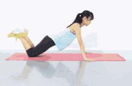
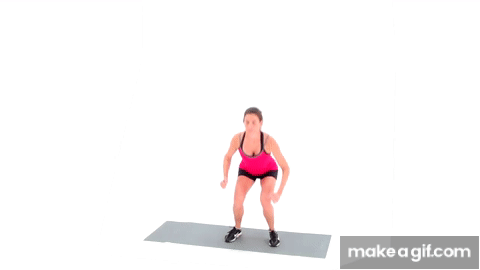
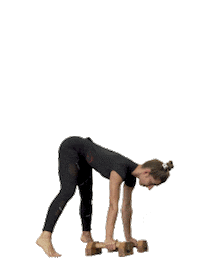

Exercises
Beginner Exercises
Jumping Jacks

- Stand tall with your arms at your sides and feet together.
- Jump your feet out to the sides while simultaneously raising your arms overhead.
- Immediately reverse the movement by jumping your feet back together and lowering your arms to your sides.
- Repeat rapidly for 30 seconds.
Wall Sit

- Stand with your back against a flat wall.
- Slide down the wall by bending your knees until your thighs are parallel to the ground, forming a 90-degree angle at your hips and knees.
- Ensure your back remains flat against the wall throughout the exercise.
- Hold this position for 30–60 seconds.
- Slowly push back up to the starting position.
Push-Ups (on knees)

- Start on your hands and knees, with your hands placed slightly wider than shoulder-width apart, directly under your shoulders.
- Lower your chest towards the floor by bending your elbows, keeping your body in a straight line from your head to your knees.
- Continue lowering until your chest is just above the ground.
- Push back up to the starting position by straightening your arms.
- Repeat for 10–15 repetitions.
Bodyweight Squats

- Stand with your feet shoulder-width apart, toes pointing slightly outward.
- Keep your chest up and your core engaged.
- Lower your hips back and down as if you were sitting in a chair, keeping your back straight.
- Continue lowering until your thighs are parallel to the ground or as low as is comfortable.
- Push through your heels to return to the starting standing position.
- Repeat for 15–20 repetitions.
Step-Ups (on stairs)

- Stand facing a sturdy step or chair.
- Place your right foot firmly on the step.
- Push through your right heel to lift your body up onto the step, bringing your left foot to meet your right foot on top.
- Step down with your left foot first, followed by your right foot.
- Repeat, alternating leading legs for 10 repetitions per leg.
Intermediate Exercises
Plank to Push-Up

- Start in a forearm plank position with your elbows directly under your shoulders and your body in a straight line.
- Place your right hand on the ground directly under your right shoulder, then push up onto your right hand.
- Follow with your left hand, pushing up into a standard push-up position.
- Lower back down to your forearms one arm at a time, returning to the plank position.
- Repeat the sequence, alternating which hand leads the movement for 30 seconds.
Tricep Dips (on a chair)
1.gif)
- Sit on the edge of a sturdy chair with your hands placed shoulder-width apart, gripping the edge of the seat.
- Extend your legs out in front of you.
- Slide your hips off the front of the chair, supporting your weight with your hands.
- Lower your body by bending your elbows, keeping your back close to the chair.
- Continue lowering until your elbows are at about a 90-degree angle.
- Push back up to the starting position by straightening your arms.
- Repeat for a desired number of repetitions.
Mountain Climbers

- Start in a high plank position with your hands directly under your shoulders and your body in a straight line.
- Bring your right knee towards your chest, keeping your foot off the ground.
- Quickly switch legs, bringing your left knee towards your chest while extending your right leg back.
- Continue alternating legs in a running motion, maintaining a stable core and straight body line for 30–45 seconds.
Jump Squats

- Stand with your feet shoulder-width apart, chest up, and core engaged.
- Lower into a squat position, keeping your back straight and thighs parallel to the ground.
- From the bottom of the squat, explosively jump upwards, extending your legs fully in the air.
- Land softly back into the squat position, ready for the next jump.
- Repeat for 12–15 repetitions.
Side Lunges

- Stand with your feet hip-width apart.
- Step your right leg out to the side, keeping your left leg straight.
- Bend your right knee and lower your hips as if you were sitting down, keeping your right foot flat on the ground.
- Ensure your left leg remains straight, but don't lock your knee.
- Push off with your right foot to return to the starting position.
- Repeat on the left side by stepping your left leg out.
- Continue alternating sides for a desired number of repetitions.
Advanced Exercises
Burpees

- Stand with your feet shoulder-width apart and arms at your sides.
- Drop into a squat position with your hands flat on the floor in front of you.
- Kick your feet back, landing in a push-up position.
- Perform one push-up (optional, but recommended for a full burpee).
- Jump your feet back up to your hands, returning to the squat position.
- Explosively jump up into the air, reaching your arms overhead.
- Land softly and immediately go into the next repetition.
- Repeat for 30–60 seconds.
Pistol Squats

- Stand on one leg, extending the other leg straight out in front of you. You can hold your arms out for balance.
- Slowly lower your body into a deep squat on your standing leg, keeping your extended leg off the ground. Try to bring your hips as close to your heel as possible.
- Maintain control throughout the movement and keep your chest up.
- Push through the heel of your standing leg to return to the starting position.
- Repeat for 6–8 repetitions on one leg, then switch to the other leg.
Handstand Hold

- Start facing a wall. Place your hands shoulder-width apart on the floor, about a foot away from the wall.
- Kick up one leg at a time against the wall, bringing your body into an inverted vertical position (handstand).
- Once stable, engage your core muscles and maintain a straight line from your wrists to your heels.
- Hold this position for 20–60 seconds, breathing steadily.
- Carefully come down by lowering one leg at a time.
One-Arm Push-Up

- Start in a standard push-up position with your feet wider than shoulder-width apart for added stability.
- Place one hand behind your back.
- Lower your chest towards the floor by bending your supporting arm's elbow, keeping your body in a straight line. Lower down as far as you can control.
- Push back up to the starting position using the strength of your supporting arm.
- Repeat on the other arm.